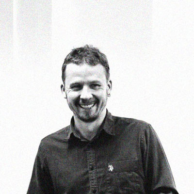
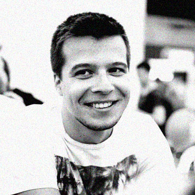
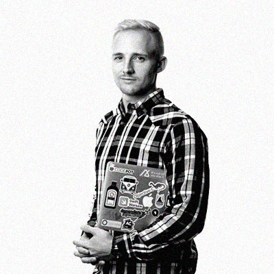
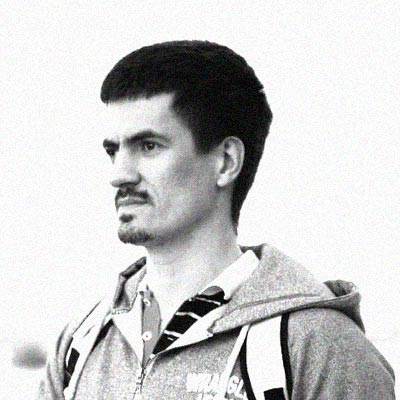

9 AUG 2019
Mobile People Day
This year Mobile People community has joined The Rolling Scopes to arrange Mobile People Day as part of the RS Conf 2019.
Mobile People is a community of engineers who care, and who are in love with mobile development and testing! We used to meet with you at various meetups & tech talks, mobile conferences & broadcasting parties – now it’s time to do something bigger!
So we will be happy to meet you on August 9, day dedicated to Mobile engineering, technologies, and trends. There will be a really good Speakers lineup , various activities and lot of fun.
Speakers
 EPAM Aleksandr Denisov
Nizhny Novgorod, Russia

SFEIR Elaine Dias Batista
Paris, France

EPAM Vladimir Ivanov
Saint-Petersburg, Russia
Cossack Labs Anastasiia Voitova
Kyiv, Ukraine
Onefootball GmbH Muhammed Salih Guler
Berlin, Germany

Headhunter Alexander Blinov
Moscow, Russia
Headhunter Pavel Strelchenko
Moscow, Russia

monday.com Yonatan Levin
Tel Aviv, Israel
 Revolut Alexey Bykov
Moscow, Russia
KasperskyLab Dmitriy Movchan
Moscow, Russia
Movavi Max Nikulin
Novosibirsk, Russia
 EL Passion Mateusz Szklarek
Warsaw, Poland
 EPAM Systems Danis Tazetdinov
Nizhny Novgogord, Russia
Schedule
9:00 Registration
10:00 Opening. Welcome speech
"Mobile People" Crew
10min | RU Green Stage
10:10 Wake Up, Neo
Vladimir Ivanov | EPAM
40min | EN Green Stage
#Common
11:10 Автотесты под Android - так ли это просто?
Dmitriy Movchan | KasperskyLab
50min | RU Green Stage
#Android
11:10 Augmenting Reality
Danis Tazetdinov | EPAM
50min | RU Blue Stage
#iOS
12:20 Молчание джунов
Alexander Blinov | Headhunter
50min | RU Green Stage
#Android
12:20 10 lines of encryption, 1500 lines of key management
Anastasiia Voitova | Cossack Labs
50min | EN Blue Stage
#iOS
13:10 Lunch break | 60min
14:10Building Voice-First Android Apps
Elaine Dias Batista | SFEIR
50min | EN Green Stage
#Android
14:10Animations in Flutter
Muhammed Salih Guler | Onefootball GmbH
50min | EN Blue Stage
#Flutter
15:20Фантастические плагины и где они обитают
Pavel Strelchenko | Headhunter
50min | RU Green Stage
#Android
15:20How to cook Flutter correctly
Aleksandr Denisov | EPAM
50min | EN Blue Stage
#Flutter
16:30UX как область ответственности мобильного разработчика
Alexey Bykov | KasperskyLab
50min | RU Green Stage
#Android
16:30 Строим видеоредактор для iOS
Max Nikulin | Movavi
50min | RU Blue Stage
#iOS
17:40Modern Android Development in Production
Yonatan Levin | monday.com
50min | EN Green Stage
#Android
17:40 MVVM as good (anti)pattern in iOS
Mateusz Szklarek | EL Passion
50min | EN Blue Stage
#iOS
18:30 Closing speech
"Mobile People" Crew
20min | RU Green Stage


Learn more about the city, food and attractions.
If you plan to stay in Minsk for more than 30 days, please, read here about the registration process.
We would be happy to discuss any kind of partnership and gladly accept any help.
Please contact us about information and media partnership by writing an email to rolling.scopes@gmail.com
Follow us
Join our Telegram group RS Conf 2019
Follow us on Facebook and Twitter to be the first to learn the news
Our hashtag on social media is #rollingscopes. Or contact us directly on our email rolling.scopes@gmail.com